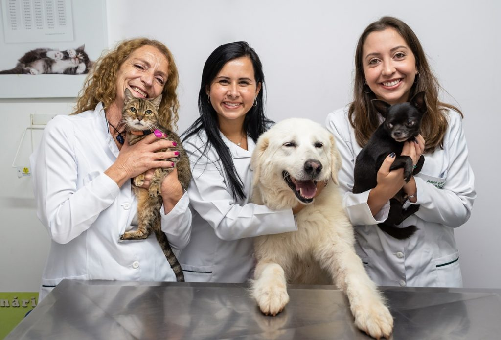
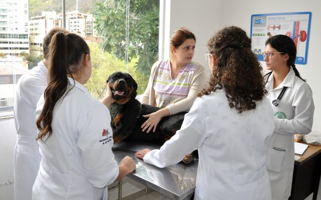

Sobre a Clínica:

Nossa clínica foi fundada em 2023 com o objetivo de oferecer um
atendimento diferenciado na área de veterinária. Desde então, nos
dedicamos a oferecer serviços de alta qualidade e uma equipe especializada
para ajudar a manter os animais de estimação saudáveis e felizes.
Nossos Serviços:
 Consulta de Rotina
Oferecemos consultas de rotina para ajudar a manter o seu animal de estimação saudável e prevenir doenças.
Cirurgia Realizamos cirurgias e procedimentos
agendados em nossas instalações modernas.
Emergência
Disponibilizamos um serviço de emergência 24
horas que visa atender às necessidades dos
seus animais de estimação em casos de
emergência
Banho e Tosa
Oferecemos serviço de banho e tosa para
deixar o seu animal de estimação limpo, feliz e
bonito.
Estamos abertos de segunda a sexta, das 9h às 18h, e aos sábados, das 9h às 12h. Em caso de
emergência, você pode nos contatar a qualquer hora do dia ou da noite.
Nossa Equipe:

Veterinários
Especializados
Todos os nossos veterinários
possuem formação superior e
vasta experiência em suas
respectivas áreas de atuação.
São profissionais
comprometidos com a saúde e
bem-estar dos seus animais de
estimação. Técnicos em
Veterinária
Nossos técnicos em veterinária
são extremamente dedicados e
têm paixão pelo cuidado e
tratamento dos animais. Eles
estão aqui para ajudar o seu
animal a se sentir confortável e
em casa durante a visita. Auxiliares
Administrativos
Nossa equipe administrativa
está disponível para ajudar com
agendamentos de consultas,
apresentação de documentos e
outras necessidades
administrativas, garantindo uma
navegação tranquila na Clínica. Oferecemos especialidades veterinárias para garantir um cuidado completo aos nossos pacientes. Nossos
serviços incluem:
Odontologia Veterinária
Cardiologia Veterinária
Oncologia Veterinária
Dermatologia Veterinária